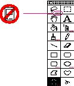
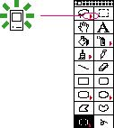

|
|
Don't Assign New Behaviors to Existing ObjectsThe previous section describes how to use elements from the existing user interface. When you do use existing interface building blocks, use themin the standard way. Make sure you do not change the behavior for standard elements. When you need a new behavior, design a new element for it. If elements behave differently in different situations, the interface becomes unpredictable and harder to figure out. Consider an example of a
palette that includes a subpalette. You might think of
using the ellipsis character to indicate that the palette
will display additional choices. However, using this symbol
to indicate a subpalette gives it a meaning other than the
standard meaning. In menus, the ellipsis character means
that the user must provide more information before a
command Figure 3-3 An incorrect subpalette indicator  A better idea would be to use a right-pointing triangle; using it to indicate a subpalette would be analogous to using it to indicate a submenu. Figure 3-4 shows a triangle being used to indicate a subpalette. Figure 3-4 A better subpalette indicator  |